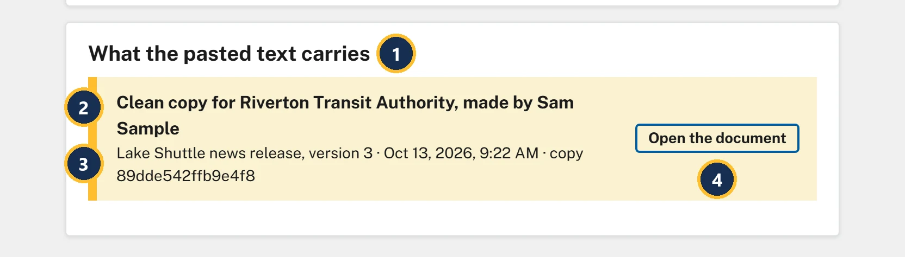
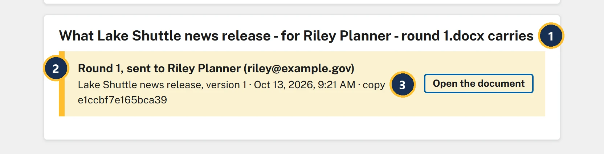
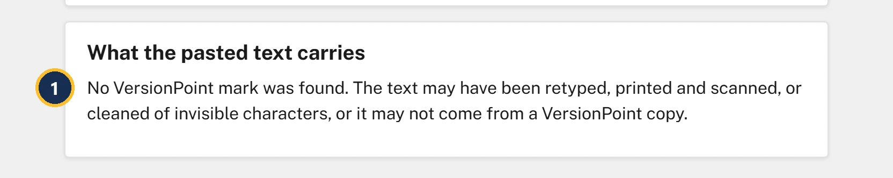
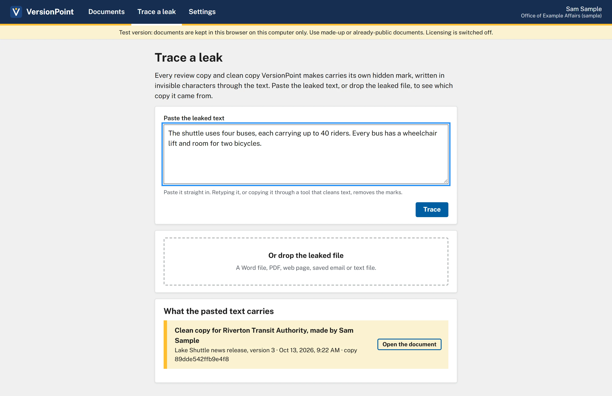

Lesson 97 minutesThe Lake Shuttle, version 3
Trace a leak
Find out which copy a leaked release came from, and who you gave it to, from the hidden mark every copy carries.
Why it matters
Sooner or later a release, or one paragraph of it, turns up before it should: on a community blog, in a reporter's inbox, in a partner's newsletter. Before anyone points a finger, you need to know which copy it came from and who you gave that copy to. Guessing wrong costs you a working relationship; Trace a leak gives you a fact to start from.
Watch
Every copy carries its own mark
Every review copy and every clean copy VersionPoint makes carries its own hidden mark: a short run of invisible characters at the end of each paragraph that has real text in it. Each copy's mark is different. The mark doesn't change how the release looks, Word's word count or what Find finds, so the person you send it to won't notice it.
VersionPoint knows who each review copy went to, because you named the reviewer when you sent it. For a clean copy, it only knows if you tell it.
![The Clean copy form on version 3. Callout 1 marks the line: The clean copy is the latest approved version as a plain Word file, for anyone outside the review: Track Changes off, nothing from the record. Each copy carries its own hidden mark, so if it leaks, Trace a leak tells you which copy it was. Callout 2 marks the field label: Who is this copy for? (optional, kept on this computer for tracing). Callout 3 marks the field, with Riverton Transit Authority typed in. Callout 4 marks the Download a clean copy button, beside Close.](assets/l9-clean-for-a.webp)
- Each clean copy carries its own hidden mark, so if it leaks, Trace a leak tells you which copy it was.
- Who is this copy for? is optional and kept on this computer. Nothing about it goes into the file.
- Type who you're giving it to: a partner, an office, a person.
- Download a clean copy can be used again for the next person. Type their name first: each copy gets its own mark, and the form lists each file under Downloaded:.
The "Trace a leak" page
![The Trace a leak page, opened from Trace a leak in the bar at the top, between Documents and Settings. Callout 1 marks the heading Trace a leak, with the line: Every review copy and clean copy VersionPoint makes carries its own hidden mark, written in invisible characters through the text. Paste the leaked text, or drop the leaked file, to see which copy it came from. Callout 2 marks the empty Paste the leaked text box. Callout 3 marks the line under it: Paste it straight in. Retyping it, or copying it through a tool that cleans text, removes the marks. Callout 4 marks the Trace button, greyed out while the box is empty. Callout 5 marks Or drop the leaked file, with A Word file, PDF, web page, saved email or text file.](assets/l9-trace-a.webp)
- Trace a leak: paste the leaked text, or drop the leaked file.
- Paste the leaked text: copy it from wherever it turned up and paste it as it is.
- Paste it straight in. Retyping it, or running it through a tool that cleans text, takes the marks out.
- Trace is ready once something is pasted.
- Or drop the leaked file: a Word file (.docx), PDF, web page (.html), saved email (.eml) or text file (.txt).

- What the pasted text carries: for a dropped file, the heading names the file instead.
- The copy, and who you gave it to: Clean copy for Riverton Transit Authority, made by Sam Sample.
- Which document and version it was, when the copy was made, and the copy's own ID.
- Open the document goes to the release.
What the result means
| What you see | What it means |
|---|---|
| A copy is named, like Clean copy for Riverton Transit Authority, made by Sam Sample or Round 1, sent to Riley Planner (riley@example.gov) | The text came from that copy. It tells you whose hands the copy started in, not who posted it: it may have been forwarded since. |
| A VersionPoint mark was found … but it isn't one of the copies on this computer. | The text came from a VersionPoint copy, but not one made here. It may come from someone else's VersionPoint: another office that uses it. |
| No VersionPoint mark was found. | The trace can't tell. The text may have been retyped, printed and scanned, or cleaned of invisible characters, or it may not come from a VersionPoint copy. |

- The heading names the file you dropped.
- Round 1, sent to Riley Planner (riley@example.gov): the round, the reviewer and their email, as you sent it.
- Version 1: the version the review copy was made from.

- No VersionPoint mark was found. It doesn't clear anyone: it means the trace has nothing to go on.
Try it
Start on Documents, where lesson 8 left you. You'll need Word for step 3, and in step 5 the review copy you downloaded in lesson 2, Lake Shuttle news release - for Riley Planner - round 1.docx.
- Open Lake Shuttle news release (version 3) and choose Clean copy. In Who is this copy for?, type Riverton Transit Authority.
- Choose Download a clean copy. The form adds Downloaded: Lake Shuttle news release.docx (for Riverton Transit Authority). Choose Close. (If you kept lesson 7's clean copy in the same folder, your browser may add a number to the new file's name.)
- Open the clean copy you just downloaded in Word. Triple-click inside the paragraph that starts The shuttle uses four buses to select all of it, and copy it.
- Back in VersionPoint, choose Trace a leak at the top. Paste into Paste the leaked text and choose Trace. Under What the pasted text carries it says Clean copy for Riverton Transit Authority, made by Sam Sample, with Lake Shuttle news release, version 3.
- Drop your lesson 2 review copy on Or drop the leaked file (or click it and choose the file). It says Round 1, sent to Riley Planner (riley@example.gov), from version 1.
- Clear the Paste the leaked text box, type a sentence of your own about the shuttle, and choose Trace. It says No VersionPoint mark was found.
Check your work

Watch out for
Quick check
Pick an answer to see why it is or isn't right. Nothing is scored or sent anywhere.
Question 1
The day before the release, the buses paragraph turns up on a community blog. You paste it into Trace a leak and it names Clean copy for Riverton Transit Authority, made by Sam Sample. Your director asks who leaked it. What do you say?
Question 2
A reporter emails you a quote from your unreleased statement. You paste it into Trace a leak and get No VersionPoint mark was found. What does that tell you?
Question 3
You're about to send the clean copy to two partners. What makes a later trace name the right one?
The final project brings in Sky Counsel for a legal review and takes the release to version 4.